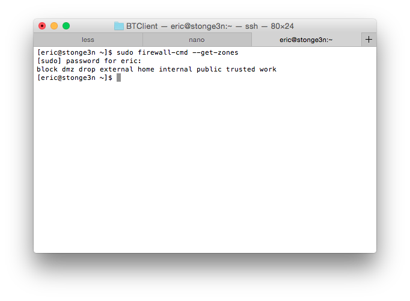
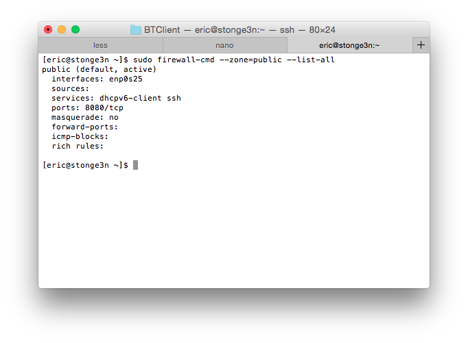
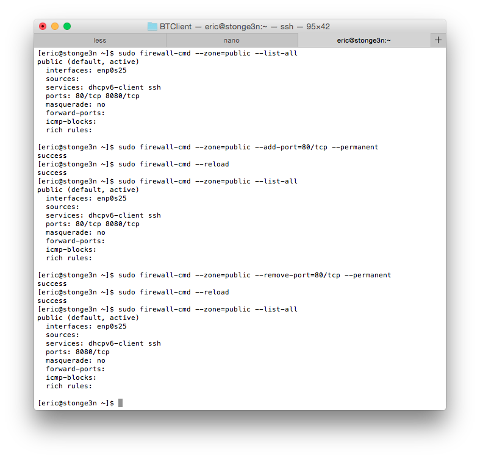
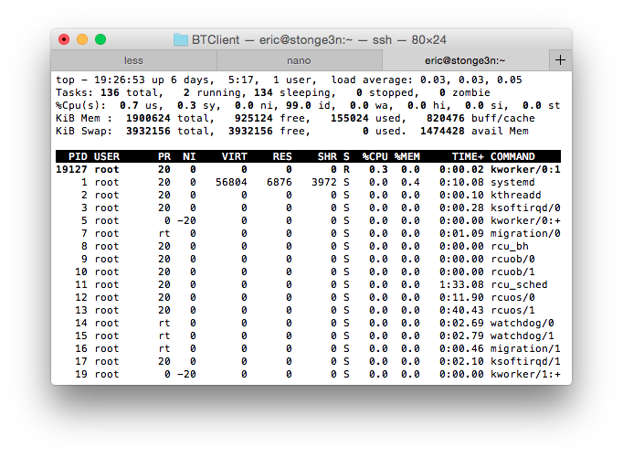
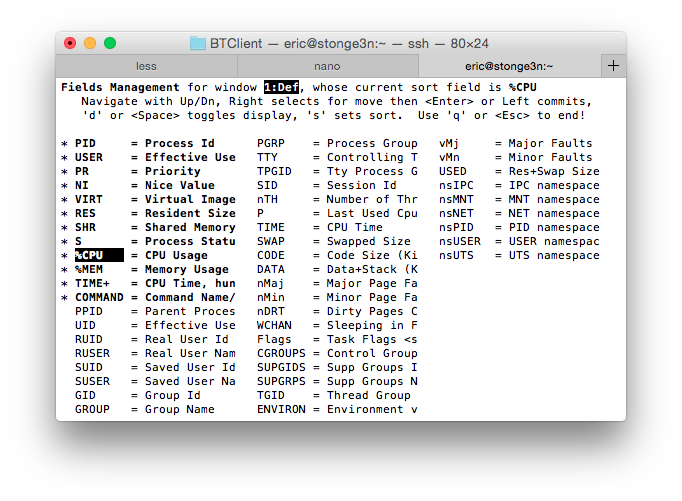

Assignment #1 -- Linux Commands
Below are the descriptions of a selected set of 8 linux commands that were not discussed in either laboratory period.
firewall-cmd
In CENTOS 7 iptables is no longer used for network traffic filtering, instead, the new firewalld daemon is used instead. Along with the new firewall a new command is required to interact with it, that is firewall-cmd.
Note: Most interactions with firewall-cmd are privileged, requiring being either the root user, or being a user in the group wheel and prefixing the command with 'sudo'.
By default most of the inbound ports on our machines will be blocked by firewalld, in order to open a port, for say running a web server we would use the command:
$ firewall-cmd --zone=public --add-port=80/tcp --permanentThis command permanently allows all inbound TCP traffic on port 80 into the machine, placing the rule in the public zone. We apply the changes to the config with the command:
$ firewall-cmd --reloadWe can get a list of all zones known to firewalld with the command:
$ firewall-cmd --get-zones We can also check to see what rules are already in place for a zone with the command:
$ firewall-cmd --zone=`<zone>` --list-all And we can obviously remove any rule that we have added with the command:
$ firewall-cmd --zone=`<zone>` --remove-port=`<port>`/`<proto>` --permanent
We can also make rich rules with firewall command that allow us to filter traffic on ports to specific ip address, like this:
$ firewall-cmd --permanent --zone=public --add-rich-rule="rule family="ipv4" source address="142.165.99.99" port protocol="tcp" port="443" accept"This command would create a rule that would only accept inbound traffic on port 443 when sourced from ipv4 address 142.165.99.99.
top
The top command provides us with a convenient way to monitor system resource usage. It provides a live-updating list of currently active processes, sorted by a user-selected attribute. By default top will display a list sorted by CPU usage %.  The user can select what attributes they would like to see, and which one they would like to sort the list by by pressing the 'f' key to display the field management screen.  To exit the top monitoring process, press the 'q' key.
rpm
The RPM command is a tool for managing the rpm packages installed on the system; it can be used to install, remove, upgrade, and even build rpm packages. Packages are a central idea to the architecture of linux.
To install a package:
$ rpm -i `<path to rpm package file>`To remove a package:
$ rpm -e `<package name>`RPM is a privileged command, and requires either being the root user or being a member of the wheel group.
ps
The ps command gives a snapshot list of all currently active processes. It is a useful to to find if a program is running or not, and if it is, to find its process id (PID).
To get a list of all current processes:
$ psTo find a specific process, we can use ps in conjunction with grep
$ ps | grep `<process name>`cat
The cat command is used to concatenate files, and print them to stout (the terminal). It is useful when reading the content of files or getting data from device nodes.
To read a file to stdout:
$ cat `<file name>`man
This maybe one of the most useful commands ever. It provides an interface to reference manuals for commands and programs. The man command opens the manual in a 'less' like editor.
To read the manual for a command simply:
$ man `<command name>`To exit a manual:
:qtail
The tail command is useful when checking log files for new information. The tail command prints the last part of a file, by default it prints the last 10 lines.
To print the end of the kernel log:
$ tail /var/messagesTo print the last 20 lines of the kernel log:
$ tail -n 20 /var/messagesln
The ln command is used to create links between files. File links are similar to shortcuts in windows.
There are two types of links, hard and symbolic. Hard links create a hard link to one underlying file. A file can only be removed from the file system when all hard links to it are removed. Alternatively a symbolic link is like a pointer to a hard link. If the hard link is removed the underlying file can be removed while leaving a broken symbolic link in place.
To create a symbolic link to a file:
$ ln -s /bin/bash ~/This will create a symbolic link to the target file in the destination path, in this case it will create a pointer to /bin/bash in your home directory.
To create a hard link to a file:
$ ln /bin/bash ~/This will create a hard link to the target file in the destination path, in this case it will create a hard link to the /bin/bash executable in your home directory.